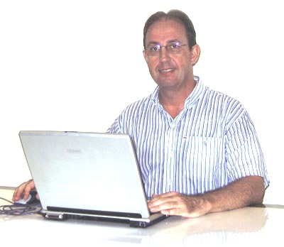
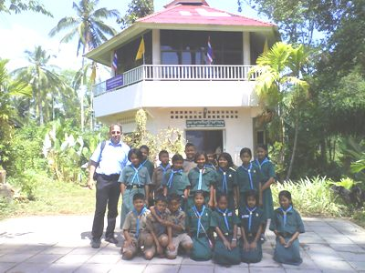

About the author

Christian Neumanns
Welcome! My name is Christian Neumanns and I dream of 'number of bugs = 0'.
After graduating as an IT engineer I've been developing customized ERP software for over 20 years, using dBase 3 in the early days, and then, since 1995, Powerbuilder. Moreover, I've written some small desktop and web applications in Java and other programming languages.
When I started to develop ERP software, I ignored a very important rule in the world of software development - the Fail fast! rule. Instead, I applied a Forgive and hope that everything will be fine! rule. The (unanticipated) consequences were inevitable: angry (and sometimes very angry) customers, frustration and loss of time and revenue. I survived, but after long sessions of pondering I finally decided to develop a programming language that should help to write more reliable code in less time. The result is Obix. The Fail fast! rule is embedded and consistently applied in Obix, not only in the language, but also in the libraries. Therefore more bugs are automatically detected at compile-time or immediately at run-time.
I like to read good code and I try to write good code. I believe that high quality code can best be achieved when self-motivated and goal-oriented people work together in a friendly open source community. Contributing to open source makes people feel good.
In my free time I like reading non-fiction books, traveling, having fun with nice people, and walking in the nature while pondering about new techniques to catch more bugs.
To contact me please send an email to christian {at} rps-obix {dot} com. You can write me in English, German, French, Luxembourgish or Thai.
More information and links
Please visit my blog: Thoughts about reliability, productivity and simplicity in software developments!
Several years ago I formulated 7 steps to success, based on some good books I read before.
When I started to develop Obix, I wrote down a set of pragmatics to be applied in Obix.
In order to improve my public speaking skills I was a member of Toastmasters from 2003 to 2008. Toastmasters is a great international non-profit organization aimed at helping people to improve their public speaking and leadership skills in a friendly and mutually supportive environment.
In February 2009 I volunteered as a computer-teacher for Openmindprojects in a primary school in South-Thailand. This was a challenging, but also an enriching experience. It made me very aware of the importance to support and improve the education of children.
